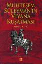
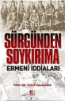

- Asp.net'de satıriçi kod yazmak. Bağlantı
- Internet Explorer'un 5. sürümünden 8. sürümüne kadarki CSS gelişmesini gösteren bir tablo. Bağlantı
- CSS'de bilmemiz gerek 6 teknik. Bağlantı
- CSS'in geleceği: Değişkenler ve Hesaplamalar. Bağlantı
- CSS ile hazırladığımız Dikey menülerimizi javascript yardımı ile nasıl daha estetik hale getirebiliriz. Bağlantı
- CSS ...
31 Mart 2008 web'den seçme haberler
- Sitemi barındırdığım hosting firması sunucularını taşımış. Bunun bize etkisi mySQL ipsi değiştiği için sitem 1-2 gün kadar görünmedi. Neyse sorunu çözdük ve devam ediyoruz.
- John Resig'den javascript ve jquery hakkında konferans video ve sunumları. Bağlantı
- Güçlü Wordpress eklentileri listesi. Bağlantı
- WordPress 2.5 sonun yayınlandı. Geçsek mi geçmesek mi ...
27 Mart 2008 web'den seçme haberler
- Web çalışanları üzerinde yapılan bir anket sonuçları. Bağlantı
- Asp.net sayfalarda form alanlarına odaklandığında ardalanı değiştirmek için yöntem. Bağlantı
- "Explorer'da
tag'i ile innerHTML kullanmak" Bağlantı
- Asp.net'de Google Map kontrolü 1.Kısım Bağlantı
- 45'den fazla güzel WordPress teması. Bağlantı
- CSS ile 9 adet metin yerine resim ...
24 Mart 2008 web'den seçme haberler
- Not defterimin yorum kısmını biraz değiştirdim. Görsel olarak biraz daha güzelleşti, avatar kısmını kaldırdım, yorum sayısı ekledim, ardışık yorumlara farklı renk tanımladım, yönetici yorumlarının görünümünü değiştirdim. Umarım beğenirsiniz.
- Safari 3.1 sürümü çıkmış. Yeni standartları destekliyor. Bağlantı
- Ajax ile yapılmış form denetimi yapan kod listesi. Bağlantı
- CSS ile form alanları ...
Muhteşem Süleyman'ın Viyana Kuşatması - Ahmed Refik
Kitap kuşatma ve sonuçlarını anlatıyor bize. Tarihmizde herzaman bir yenilgi gibi algılanan bu kuşatmanın aslında ne kadar önemli sonuçlar doğurduğunu anlatan güzel bir eser. Eserin tek hoşuma gitmeyen yönü bazı bölümleri rakamlarla boğması. Tarihten bir çok ders almalıyız. Bir olaya farklı yönlerden bakmayı öğreten güzel bir eser. Yayıncının notu:Ahmet ...
devamını oku18 Mart 2008 web'den seçme haberler
- SitePoint CSS referansından sonra HTML referansını yayınladı. Güzel bir kaynak. Bağlantı
- "Internet Explorer 8 Beta, Firefox 3 Beta 4′e karşı !" Bağlantı
- Firefox3'de hafıza kullanım oranlarının düştüğü belirtiliyor. Tüm tarayıcıların hafıza kullanımları. Bağlantı
- Güzel CSS kodu yazmak. Bağlantı
- En çok kullanılan CSS kod ipuçları. Bağlantı
- Asp.net 2.0 ...
Sitemi düzenleme çabalarım I: Etiket Bulutu ve etiketler
Etiket bulutları kullanıcının isteğine hızlı erişmesini sağlayan ve arama motorları açısından önemli olan bir araçtır. Türkçe günlük yazarları pek tercih etmese de bence güzel bir uygulama. Etiket sistemi hakkında ayrıntılı bilgiyi teknoseyir ve bildirgeç 'ten alabilirisiniz.
WordPress bize etiket bulutu eklem imkanı sağlıyordu ancak bazı eklentiler yardımı ile, ancak önemine ...
devamını oku12 Mart 2008 web'den seçme haberler
- jquery ile listler arasında öğe taşıma örneği. Bağlantı
- 10 adet Ajax ile düzeltme kodları. Bağlantı
- Farklı PNG destek uygulamaları. Bağlantı
- CSS ile formları düzenlemek ve sorunlarını çözmek. Bağlantı
- IE8'de CSS3 özelliklerini görmek. Bağlantı
- "Web'de tipografi: CSS" Bağlantı
- Bir web sitesini CSS ile tasarlmak 2. bölümü. Bağlantı
- "CSS ile ...
Internet Explorer 8'e kısa bir bakış
Internet Explorer 8 Beta 1 yayınlandı. Bu bizim gibi web kodlamacıları için önemli olabilecek bir gelişme. Bunun sebebi şu an kod yazarken Microsoft'un sorunlarla dolu Internet Explorer 6 ile uğraşıyor olmamız. Birçok özellikten yoksun bu tarayıcı bize rahmet okutuyor. Internet Explorer 7 tam istediklerimiz karşılamadı, ama 8'den ümitliyiz ...
devamını okuSürgünden Soykırma Ermeni İddaları - Yusuf Halaçoğlu
Ermeni tehciri ile alakalı bir çok yayını olan Yusuf Halaçoğlu'nun kısa ve öz içerik bir kitabı. Konu hakkında bir çok insanın tam olarak bilgisi yok. Sorunda buradan kaynaklanıyor. Bir çok insan(bizlerde dahil) konu hakkında bilgisi olmadan savunuyor konuyu. Bir çok konuda olduğu gibi bu konuda da kendimiz tam ...
devamını oku